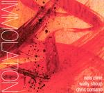

Home Artist links Label link

Cline/Shoup/Corsano - Immolation/Immersion
| Artist: | Cline/Shoup/Corsano |
| Title: | Immolation/Immersion |
| Label: | Strange Atractors Audio House |
| Length(s): | 54 minutes |
| Year(s) of release: | 2005 |
| Month of review: | [03/2006] |
Line up
Nels Cline - electric guitar, effects
Wally Shoup - alto sax
Chris Corsano - drumset, wires
Tracks
| 1) | Lake Of Fire Memories | 2.28
|
| 2) | Immolation /Immersion | 28.03
|
| 3) | Minus Mint | 4.09
|
| 4) | Beard Of Pine | 13.05
|
| 5) | Ghost Bell Canto | 6.24
|
Summary
The only person I had ever heard of was Nels Cline who was mentioned
as a jazz musician, an innovative one.
The music
Lake Of Fire Memories is a cacophony of what these
instrumentalists have to offer. Chaos reigns and rules.
The end result is hardly anything that can be appreciated.
Immolation /Immersion is a large chunk of pacey rhythms, meandering sax, while
the guitars keeps itself in the background. Compared to the opener, there is more
line in this composition, and although it seems the band is rambling on forever,
the band is looking for more extremes here. After a minute or seven, the band
moves into a very low key passage, with occasional musicianship, and the drummer
fully out of it. I guess this could be the immersion part. This passage of careful
playing (but still quite noisy and avant-garde) continues for about twelve
minutes after which the music more definitely starts to build up, especially
through the drums that come back in. The final passage is dominated by percussion
with the sax shrilly in the back.
On Minus Mint the band continues the line of the middle part of the title track:
soft meanderings, mumblings on the sax, effects in the back from the guitar and, in
this case at least, rolling rums. It all stays very low key this time around.
Still, the music continues to breathe a certain unquiet, restlessness.
Beard Of Pine is the second major track on the album. The style is definitely
jazz, but again of the avant-garde, meandering kind. The percussives are light,
which is typical for jazz, and I have not spotted a melody yet. For the rest,
this song is getting louder and more chaotic along the way, although never
as strongly as the opener.
Ghost Bell Canto is indeed ghostly, even though it took a while before sounds really
reached my ears. I can imagine this type of music played on graveyards, except
for the high pitched end of sax, which sounds out of place in my ears. I would
have preferred the low registers only. Still, this is the most likable track on the
album.
Conclusion
Reading my comments above may give you the impression that I am not much impressed
with this album. And you are right. Alternating between cacophony and quieter parts
that seem very much inspired by the type of seventies music that started and continued for way too long a time, is what comes to mind. There's hardly melody,
if any, and I guess this is not unintentional. On the other hand, I also detect
little in the way of tension, atmosphere and the like, and that could have compensated to some extent (it does in a way on Ghost Bel Canto). All in all, a very
improv like freejazz outing with plenty of (dis)quiet(ing) passages that failed to interest me entirely.
© Jurriaan Hage